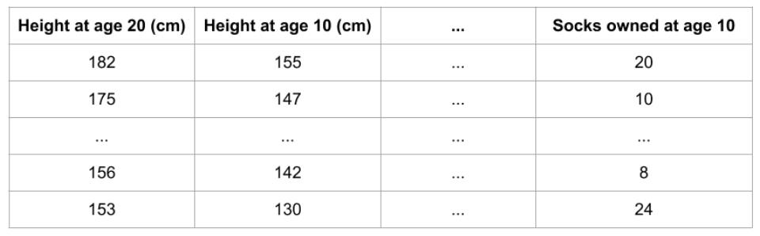
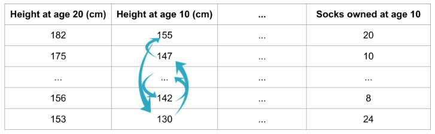
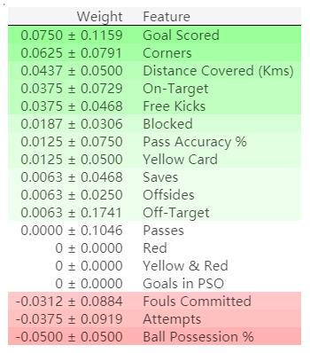

转载请注明来源：http://iceflameworm.github.io/2019/08/17/permutation-importance/
在推广数据分析、挖掘以及模型训练结果的时候，经常遇到客户或业务方需要我们对其进行解读。如果不能让客户或业务方很好地理解或者接受的话，“数据民工们”的工作成果就很难被有效地推行下去，哎，宝宝们都很苦啊。
最近忽然想起之前在逛kaggle的时候看到过有模型解释性相关的课程，于是就回头温习下，梳理下要点，一来加深自己的理解，也方便感兴趣的同学阅读。
这是第二节：Permutaion Importance
作用与特点
训练得到一个模型之后，我们可能会问的一个最基本的问题是 哪些特征对预测结果的影响最大？
这一概念叫做 特征重要性。
有很多度量特征重要性的方法。一些方法回答的问题与上述问题略有不同，而另外一些方法则具有一些documented shortcomings (暂译为：记录的缺点)。
与其它方法相比，排列重要性具有以下优点：
- 计算速度快
- 应用广泛、易于理解
- 与我们期望一个特征重要性度量所具有的性质一致
工作原理
排列重要性使用模型的方式与你迄今为止所见到过的都不同，而且在一开始，很多人都会对其感到很困惑。所以首先举一个例子来具体介绍以下它。
假定有以下格式的数据集：

我们想用一个人10岁的数据去预测他20岁的身高是多少？
数据中包含：
- 有用的特征（10岁时的身高）
- 较弱的特征（10岁时拥有的股票）
- 对预测基本没有作用的特征
排列重要性是要在模型拟合之后才能进行计算。 所以对于给定的身高、股票数量等取值之后，计算排列重要性并不会改变模型或者是它的预测结果。
相反，我们会问以下问题：如果随机打乱验证数据某一列的值，保持目标列以及其它列的数据不变，那么这种操作会在这些打乱的数据上对预测准确率产生怎样的影响？

对某一列进行随机排序应当会降低预测的准确率，这是因为产生的数据不再对应于现实世界中的任何东西。如果随机打乱的那一列模型预测对其依赖程度很高，那么模型准确率的衰减程度就会更大。在这个例子中，打乱height at age 10将会让预测结果非常差。但是如果我们随机打乱的是socks owned，那么产生的预测结果就不会衰减得那么厉害。
有了上述认识之后，排列重要性就按照以下步骤进行计算：
- 得到一个训练好的模型
- 打乱某一列数据的值，然后在得到的数据集上进行预测。用预测值和真实的目标值计算损失函数因为随机排序升高了多少。模型性能的衰减量代表了打乱顺序的那一列的重要程度。
- 将打乱的那一列复原，在下一列数据上重复第2步操作，直到计算出了每一列的重要性。
代码示例
下面的例子会用到这样一个模型，这个模型用球队的统计数据预测一个足球队会不会出现“全场最佳球员”。“全场最佳球员”奖是颁发给比赛里表现最好的球员的。我们现在关注的并不是建模的过程，所以下面的代码只是载入了数据，然后构建了一个很基础的模型。
1 | import numpy as np |
下面演示如何用eli5库计算和展示排列重要性。
1 | import eli5 |
输出结果：

排列重要性结果解读
排在最上面的是最重要的特征，排在最下面是重要性最低的特征。
每一行的第一个数字表示模型性能衰减了多少（在这个例子中，使用准确率作为性能度量）。
跟数据科学里面的很多事情一样，在对某一打乱的特征提取重要性的时候，是存在随机性的，所以我们在计算排列重要性的时候，会通过多次打乱顺序的方式重复这一过程。在±后面的数字表示标准差。
偶尔你会看到负值的排列重要性。在这些情况中，在打乱的数据上得到预测结果比真实数据的准确率更高。这在所选特征与目标基本无关（重要性应该为0）的情况下会出现，但是随机的因素导致预测结果在打乱的数据上表现得更准确。就像这个例子一样，因为没有容忍随机性的空间，这种情况在小的数据集上很常见。
在我们的例子中，最重要的特征是Goals scored，看上去似乎是说得通的。对于其他变量的排序是否令人意外，足球球迷可能会有比较直观的感觉。